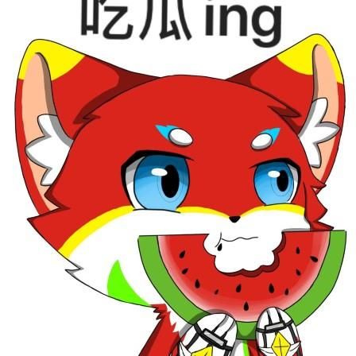

注意看！这个兽受竟然有一个专门的个人介绍耶！

小黄泊 xiaohuangbo
这是咱的介绍页面页面的副本，因为咱觉得买了fur0.com 不部署些什么实在是太不河里（？ 了，所以咱也就介绍一下咱自己吧！（当然你也可以看：About me - 小黄泊的小站 | 小黄泊的小站 (furrylove.top) 。
我的经历
咱还是一个高中学生，也许没啥时间来更新博客，但会尽量上线来保持更新，咱当然还在学习编程语言中，也许技术力不太行，但咱还会努力的！
FURRY
没错，咱已经进入兽圈有好几年了，了解到了圈子里的文化，也有了自己的设子，挺不错的，同时也在龙圈，TG圈子里闲逛，主要以技术增长型为主。
目标
拥有自己的网站✔️
有自己的Fur社交网络圈子✔️
网站浏览量破1000✔️
HTML，python只读✔️
网站浏览量破10000
学习其它语言的编程
有钱
联系我
广告商请勿骚扰！欢迎对网站有建设性意见的问题！当然闲聊灌水也是可以的
以下是我的联系方式：
QQ:2772636369
telegram:https://t.me/im_furry_Data
bilibili:小黄泊的小号的个人空间-小黄泊的小号个人主页-哔哩哔哩视频 (bilibili.com)
咱的一些辣鸡技能
© 2023 furrylove.top| Design by 小黄泊的小站